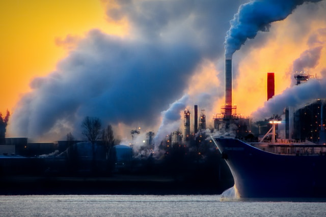

When you’re pregnant, your world changes. You are now responsible for not only yourself, but also for a tiny growing human. Every choice you make could potentially affect the health of your baby. Everything from what you eat to which medications you take to where you live can impact your pregnancy and the health of your child.
But there is another factor that could affect the health of both you and your baby: environmental hazards. From extreme temperatures to particulate matter in the air to toxic chemicals in the water and soil—these factors are all linked to maternal mortality and morbidity.
From the moment an egg is fertilized, the fetus is under attack from attacks from the outside world. Toxic chemicals in water, soil and air can all make their way into the body of a soon-to-be mother and cause a host of health problems for both her and her developing baby. The placenta doesn't have the same filters as your kidneys and liver, so it's even easier for chemicals to get through.
In fact, we're only recently beginning to understand how sensitive the mother and fetus are to environmental hazards like extreme temperatures, particulate matter in the air, and toxic chemicals in water and soil—and how these issues are directly related to maternal mortality and morbidity worldwide.
Various studies have drawn connections between various environmental hazards and maternal health and outcomes. Written by public health experts and environmental scientists, these studies give us insight on how our environment affects soon-to-be mothers around the world.
These issues are particularly important because they are preventable. As we learn more about how our environment affects maternal health around the world, it's imperative that we continue to advocate for safer environments for pregnant women everywhere.
The first step is awareness– learn more about this issue here with us today, then learn how you can make a difference in your world and community.